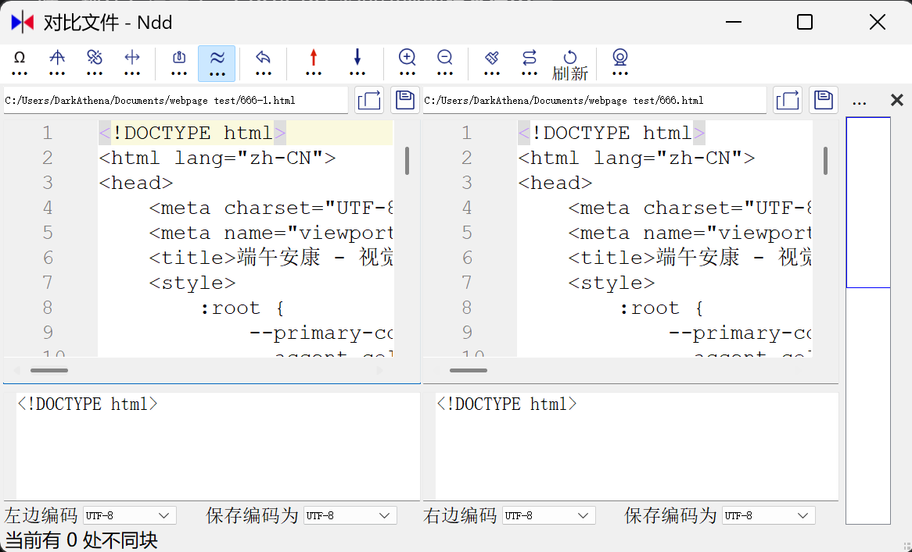
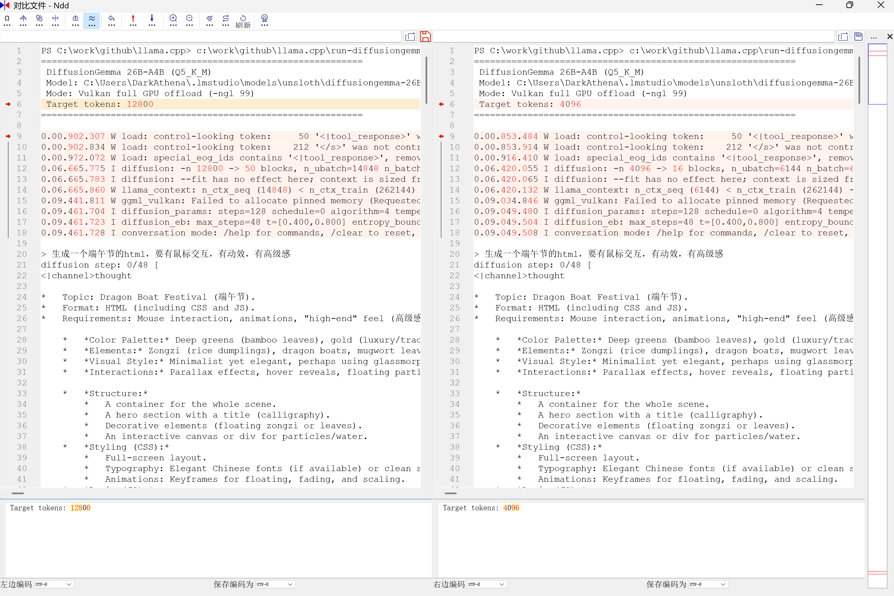
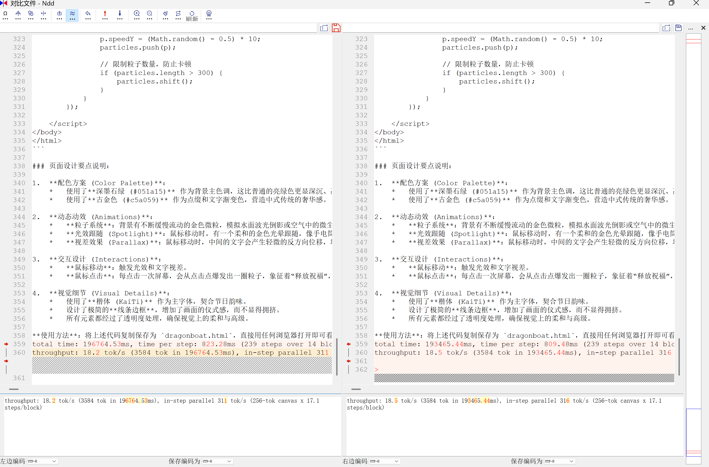

同一句话，两次全新启动，输出一模一样——AI MAX+395运行DiffusionGemma实测
扩散模型 vs 自回归模型
常见的LLM大多是自回归模型，简单来说就是词语接龙，根据前面的文本猜测下一个最可能出现的词语；而扩散模型和自回归模型那种词语接龙的方式不一样，扩散模型不是一个字一个字地吐，而是把回复内容分成多块，多块并行的变，逐渐准确，最终直接出来一个完整文本。就像跑文生图一样，先生成模糊块，然后慢慢变清晰。
环境配置
- 模型：unsloth/diffusiongemma-26B-A4B-it-GGUF
- 量化级别：Q5_K_M
编译 llama.cpp（PR #24423）
（PR还在变，我是6月17号克隆的）
git clone https://github.com/ggml-org/llama.cpp
cd llama.cpp
git fetch origin pull/24423/head:diffusiongemma
git checkout diffusiongemma
cmake -B build -DGGML_VULKAN=ON
cmake --build build -j --config Release --target llama-diffusion-cli
启动脚本
@echo off
setlocal enabledelayedexpansion
REM ============================================================
REM DiffusionGemma 26B-A4B Launcher
REM Model: unsloth/diffusiongemma-26B-A4B-it-GGUF (Q5_K_M)
REM Runner: llama-diffusion-cli (llama.cpp PR #24423)
REM ============================================================
REM --- Hardware -------------------------------------------------
REM CPU: AMD Ryzen AI MAX+ 395 (32c, AVX-512)
REM No NVIDIA GPU -> use Vulkan backend, full offload
REM --------------------------------------------------------------
REM --- Config (edit as needed) ----------------------------------
REM Path to llama-diffusion-cli.exe
set "CLI_PATH=C:\work\github\llama.cpp\build\bin\Release\llama-diffusion-cli.exe"
REM Path to GGUF model file
set "MODEL_PATH=C:\Users\DarkAthena\.lmstudio\models\unsloth\diffusiongemma-26B-A4B-it-GGUF\diffusiongemma-26B-A4B-it-Q5_K_M.gguf"
REM GPU offload layers (99 = all layers on GPU)
set NGL=99
REM Target token count
set NPREDICT=12800
REM --- Parameter reference --------------------------------------
REM -m Model file path
REM -ngl GPU offload layers (99 = full GPU)
REM -cnv Conversation mode
REM -n Target token count
REM --flash-attn on Flash attention (faster on GPU)
REM --kv-offload KV cache on GPU
REM --diffusion-gpu-sampling on GPU-side sampling (eliminates D2H logits copy)
REM --diffusion-gpu-sample-reduce on GPU-side argmax/entropy reduction
REM --diffusion-visual Live canvas denoise visualization (optional)
REM --diffusion-eb-max-steps Max denoise steps (default 48)
REM --diffusion-eb-t-max / t-min Temperature schedule (default 0.8->0.4)
REM --------------------------------------------------------------
REM Check executable
if exist "%CLI_PATH%" goto :cli_ok
echo [ERROR] llama-diffusion-cli.exe not found
echo Path: %CLI_PATH%
echo Build it first or edit CLI_PATH above.
pause
exit /b 1
:cli_ok
REM Check model file
if exist "%MODEL_PATH%" goto :model_ok
echo [ERROR] Model file not found
echo Path: %MODEL_PATH%
pause
exit /b 1
:model_ok
echo ============================================================
echo DiffusionGemma 26B-A4B (Q5_K_M)
echo Model: %MODEL_PATH%
echo Mode: Vulkan full GPU offload (-ngl %NGL%)
echo GPU sampling: ON (no CPU fallback)
echo Target tokens: %NPREDICT%
echo ============================================================
echo.
"%CLI_PATH%" -m "%MODEL_PATH%" -ngl %NGL% -cnv -n %NPREDICT% --flash-attn on --kv-offload --diffusion-gpu-sampling on --diffusion-gpu-sample-reduce on
echo.
echo [Session ended]
pause
实测：生成端午节网页
我使用提示词"生成一个端午节的 html，要有鼠标交互，有动效，有高级感"，生成了一个 9407 字节的网页。
然后我重启了电脑（同时也重启了 llama.cpp），再次使用完全相同的提示词，最终生成的网页竟然还是 9407 字节，内容和之前的一模一样！
不过当我调整了 llama.cpp 的启动参数后，输出内容就发生了变化。

我暂时没有去研究这个机制，但如果每次都能得到稳定的结果，这对于 agent 调用可是真正意义上无需担心执行结果有差异了。
运行日志
PS C:\Users\DarkAthena\WorkBuddy\2026-06-17-13-17-13> .\run-diffusiongemma.bat ============================================================ DiffusionGemma 26B-A4B (Q5_K_M) Model: C:\Users\DarkAthena\.lmstudio\models\unsloth\diffusiongemma-26B-A4B-it-GGUF\diffusiongemma-26B-A4B-it-Q5_K_M.gguf Mode: Vulkan full GPU offload (-ngl 99) Target tokens: 12800 ============================================================ 0.00.863.453 W load: control-looking token: 50 '<|tool_response>' was not control-type; this is probably a bug in the model. its type will be overridden 0.00.863.847 W load: control-looking token: 212 '</s>' was not control-type; this is probably a bug in the model. its type will be overridden 0.00.927.708 W load: special_eog_ids contains '<|tool_response>', removing '</s>' token from EOG list 0.10.823.750 I diffusion: -n 12800 -> 50 blocks, n_ubatch=14848 n_batch=14848 n_ctx=14848 (canvas_length=256) 0.10.823.760 I diffusion: --fit has no effect here; context is sized from -n and the canvas. Set -ngl / --n-cpu-moe to control device memory. 0.10.824.008 W llama_context: n_ctx_seq (14848) < n_ctx_train (262144) -- the full capacity of the model will not be utilized 0.13.386.029 W ggml_vulkan: Failed to allocate pinned memory (Requested buffer size exceeds device buffer size limit: ErrorOutOfDeviceMemory) 0.13.404.342 I diffusion_params: steps=128 schedule=0 algorithm=4 temperature=0.800 eps=0.001000 mask_token=4 0.13.404.366 I diffusion_eb: gpu sample reduce off (needs --diffusion-gpu-sampling on / sc_dev) 0.13.404.372 I diffusion_eb: max_steps=48 t=[0.400,0.800] entropy_bound=0.1000 stability=1 confidence=0.0050 kv_cache=on gpu_sampling=off sample_reduce=off 0.13.404.379 I conversation mode: /help for commands, /clear to reset, /exit to quit > 生成一个端午节的html，要有鼠标交互，有动效，有高级感 diffusion step: 22/48 [====================== ] 45%3.13.672.484 W ggml_vulkan: Failed to allocate pinned memory (Requested buffer size exceeds device buffer size limit: ErrorOutOfDeviceMemory) 3.14.258.197 W ggml_vulkan: Failed to allocate pinned memory (Requested buffer size exceeds device buffer size limit: ErrorOutOfDeviceMemory) diffusion step: 14/48 [============== ] 29%3.32.674.561 W ggml_vulkan: Failed to allocate pinned memory (Requested buffer size exceeds device buffer size limit: ErrorOutOfDeviceMemory) 3.33.159.246 W ggml_vulkan: Failed to allocate pinned memory (Requested buffer size exceeds device buffer size limit: ErrorOutOfDeviceMemory) diffusion step: 16/48 [================ ] 33%3.54.623.600 W ggml_vulkan: Failed to allocate pinned memory (Requested buffer size exceeds device buffer size limit: ErrorOutOfDeviceMemory) 3.55.151.234 W ggml_vulkan: Failed to allocate pinned memory (Requested buffer size exceeds device buffer size limit: ErrorOutOfDeviceMemory) diffusion step: 20/48 [==================== ] 41%4.21.391.208 W ggml_vulkan: Failed to allocate pinned memory (Requested buffer size exceeds device buffer size limit: ErrorOutOfDeviceMemory) 4.21.965.438 W ggml_vulkan: Failed to allocate pinned memory (Requested buffer size exceeds device buffer size limit: ErrorOutOfDeviceMemory) diffusion step: 15/48 [=============== ] 31%4.45.393.132 W ggml_vulkan: Failed to allocate pinned memory (Requested buffer size exceeds device buffer size limit: ErrorOutOfDeviceMemory) 4.45.993.752 W ggml_vulkan: Failed to allocate pinned memory (Requested buffer size exceeds device buffer size limit: ErrorOutOfDeviceMemory) diffusion step: 10/48 [========== ] 20%5.06.755.417 W ggml_vulkan: Failed to allocate pinned memory (Requested buffer size exceeds device buffer size limit: ErrorOutOfDeviceMemory) 5.07.411.720 W ggml_vulkan: Failed to allocate pinned memory (Requested buffer size exceeds device bug size limit: ErrorOutOfDeviceMemory) diffusion step: 45/48 [============================================== ] 93%6.00.602.123 W ggml_vulkan: Failed to allocate pinned memory (Requested buffer size exceeds device buffer size limit: ErrorOutOfDeviceMemory) 6.01.302.662 W ggml_vulkan: Failed to allocate pinned memory (Requested buffer size exceeds device buffer size limit: ErrorOutOfDeviceMemory) diffusion step: 16/48 [================ ] 33%6.30.121.975 W ggml_vulkan: Failed to allocate pinned memory (Requested buffer size exceeds device buffer size limit: ErrorOutOfDeviceMemory) 6.30.866.200 W ggml_vulkan: Failed to allocate pinned memory (Requested buffer size exceeds device buffer size limit: ErrorOutOfDeviceMemory) diffusion step: 25/48 [========================== ] 52%7.09.803.701 W ggml_vulkan: Failed to allocate pinned memory (Requested buffer size exceeds device buffer size limit: ErrorOutOfDeviceMemory) 7.10.582.482 W ggml_vulkan: Failed to allocate pinned memory (Requested buffer size exceeds device buffer size limit: ErrorOutOfDeviceMemory) diffusion step: 9/48 [========= ] 18%7.34.858.945 I
模型输出内容
模型的思考过程和最终输出如下：
<|channel>thought
Topic: Dragon Boat Festival (端午节).
Format: HTML (with CSS/JS).
Requirements: Mouse interaction, animations, "high-end/sophisticated" feel (高级感).
Visual elements: Dragon boats (龙舟), Zongzi (粽子), Mugwort (艾草), Water (波浪), traditional Chinese patterns (clouds, knots).
Color palette: Deep blues (water), gold (luxury/tradition), jade green (zongzi/mugwort). Avoid overly neon colors; use gradients and subtle shadows.
Interactions: Parallax effects, floating elements, hover-triggered reveals, smooth transitions.
Animations: Floating boats, swaying water, fading-in text, particle effects.
Structure:
- A container for the whole scene.
- A hero section with a title and greeting.
- An animated background (waves/clouds).
- Interactive elements (a dragon boat, floating zongzi).
- A footer or subtle details.
Styling (CSS):
- Use Google Fonts (or standard system fonts with fallback to elegant).
- Use Flexbox/Grid for layout.
@keyframesfor animations.- Glassmorphism for a modern "high-end" look.
Interactivity (JS):
- Mouse-tracking effect (parallax).
- Click events (e.g., creating ripples or particles).
- Entrance animations.
Background: Dark blue gradient with layered waves using CSS shapes or SVG.
Dragon Boat: A stylized boat that follows the mouse slightly or oscillates.
Typography: Elegant calligraphy-style font or clean sans-serif.
Particles: Small golden sparks or water droplets floating around to add depth.
HTML Structure:
<div class="container"> <div class="waves"></div> <div class="content"> <h1>端午安康</h1> <p>龙舟竞渡，岁岁平安</p> </div> <div id="boat">...</div> </div> <canvas id="particles"></canvas>CSS Details:
background: linear-gradient(to bottom, #001f3f, #003366, #00509d);.wave: Use multiple divs with different opacity and animation speeds..boat: SVG for a sharp, professional look.JS Details:
mousemoveevent to move the boat and background layers (parallax).Canvasfor a subtle particle system.High-end feel? Yes, using
backdrop-filter: blur(), subtle gradients, and smooth transitions.Interaction? Yes, mouse tracking and click effects.
Animations? Yes, waves and floating elements.
Self-Correction during coding: Make sure the code doesn't require external image files (which might break for the user). I'll use SVG and CSS-based shapes to ensure it works out of the box.<channel|>为了营造一个“高级感”的端午节网页，我为你设计一个结合了中式简约风、动态粒子效果、视差交互以及鼠标跟随动效的单文件 HTML。
这个页面包含以下特性：
- 动态波浪背景：使用 CSS 动画的层叠波浪。
- 鼠标交互：鼠标移动时，龙舟和背景元素会产生微小的视差偏移。
- 粒子系统：Canvas 绘制的金色流光粒子，增加灵幻感。
- 高级排版：采用毛玻璃效果（Glassmorphism）和优雅的中文字体组合。
你可以直接将以下代码保存为
dragonboat.html并在浏览器中打开。```html <!DOCTYPE html> <html lang="zh-CN"> <head> <meta charset="UTF-8"> <meta name="viewport" content="width=device-width, initial-scale=1.0"> <title>端午安康 - 视觉盛宴</title> <style> :root { --primary-color: #d4a059; /* 古铜金 */ --accent-color: #2d5a27; /* 墨绿色 */ --bg-color: #051626; /* 深海蓝 */ --text-color: #f4f1ea; } * { margin: 0; padding: 0; box-sizing: border-box; cursor: none; } body { background-color: var(--bg-color); color: var(--text-color); font-family: "PingFang SC", "Microsoft YaHei", serif; overflow: hidden; /* 禁止滚动，增加交互感 */ height: 100vh; } /* 粒子背景层 */ #particle-canvas { position: fixed; top: 0; left: 0; z-index: 1; } /* 容器 */ .container { position: relative; width: 100%; height: 100vh; display: flex; justify-content: center; align-items: center; z-index: 2; perspective: 1000px; } /* 动态波浪 */ .waves-container { position: absolute; bottom: 0; width: 100%; height: 300px; opacity: 0.4; } .wave { position: absolute; bottom: 0; width: 200%; height: 100px; background: url('data:image/svg+xml,%3Csvg viewBox="0 0 520 150" xmlns="http://www.w3.org/2000/svg"%3E%3Cpath d="M0,50C150,50,200,50,320,50S370,50,520,50V150H0V50Z" fill="%232d5a27"%3E%3C/svg%3E'); background-size: 50% 100%; animation: move-wave 10s linear infinite; } @keyframes move-wave { from { transform: translateX(0); } to { transform: translateX(-50%); } } .wave-1 { animation-duration: 15s; opacity: 0.5; } .wave-2 { animation-duration: 20s; opacity: 0.3; } /* 主内容区 */ .main-content { text-align: center; z-index: 10; pointer-events: none; transition: transform 0.1s ease-out; } h1 { font-size: 8rem; font-weight: 300; letter-spacing: 15px; background: linear-gradient(to bottom, #f4f1ea, var(--primary-color)); -webkit-background-clip: text; -webkit-text-fill-color: transparent; margin-bottom: 20px; filter: drop-shadow(0 5px 15px rgba(0,0,0,0.5)); } .subtitle { font-size: 1.5rem; letter-spacing: 8px; color: var(--primary-color); opacity: 0.8; } .line { width: 100px; height: 1px; background: var(--primary-color); margin: 20px auto; position: relative; } .line::after { content: ''; position: absolute; top: 0; left: 0; width: 0; height: 100%; background: #fff; animation: expand 3s forwards 1s; } @keyframes expand { to { width: 300px; } } /* 龙舟元素 (SVG) */ .boat-wrapper { position: absolute; bottom: 20%; left: 10%; width: 300px; height: 150px; transition: transform 0.2s ease-out; } .boat-svg { width: 100%; filter: drop-shadow(0 10px 20px rgba(0,0,0,0.5)); } /* 自定义光标 */ #cursor { position: fixed; width: 20px; height: 20px; border: 1px solid var(--primary-color); border-radius: 50%; pointer-events: none; z-index: 999; transition: transform 0.1s ease; } #cursor-inner { position: fixed; width: 4px; height: 4px; background: var(--primary-color); border-radius: 50%; pointer-events: none; z-index: 999; } /* 装饰文字 */ .decoration { position: absolute; font-size: 0.9rem; color: var(--primary-color); opacity: 0.3; letter-spacing: 4px; } .top-left { top: 5%; left: 5%; transform: rotate(-90deg); } .bottom-right { bottom: 5%; right: 5%; transform: rotate(90deg); } </style> </head> <body> <div id="cursor"></div> <div id="cursor-inner"></div> <canvas id="particle-canvas"></canvas> <div class="container" id="scene"> <div class="decoration top-left">DRAGON BOAT FESTIVAL</div> <div class="decoration bottom-right">端午 · 仲夏 · 传承</div> <div class="main-content" id="main-text"> <p class="subtitle">端午安康</p> <div class="line"></div> <h1>龙舟竞渡</h1> <p class="subtitle">时光静好 · 岁岁平安</p> </div> <!-- 龙舟 SVG --> <div class="boat-wrapper" id="boat"> <svg class="boat-svg" viewBox="0 0 200 100"> <path d="M20,70 Q100,110 180,70 L160,50 L40,50 Z" fill="#4a3728" /> <path d="M40,50 L100,20 L160,50" stroke="#d4a059" stroke-width="2" /> <rect x="95" y="20" width="10" height="40" fill="#d4a059" /> <circle cx="100" cy="15" r="5" fill="#ff4d40" /> <path d="M60,70 L60,90 M80,75 L80,95 M100,70 L100,90 M120,75 L120,95" stroke="white" stroke-width="2" /> </svg> </div> <div class="waves-container"> <div class="wave wave-1"></div> <div class="wave wave-2"></div> </div> </div> <script> // 鼠标跟随效果 const cursor = document.getElementById('cursor'); const cursorInner = document.getElementById('cursor-inner'); document.addEventListener('mousemove', (e) => { cursor.style.left = e.clientX + 'px'; cursor.style.top = e.clientY + 'px'; cursorInner.style.left = e.clientX + 'px'; cursorInner.style.top = e.clientY + 'px'; // 视差效果 const scene = document.getElementById('scene'); const mainText = document.getElementById('main-text'); const boat = document.getElementById('boat'); const xX = (e.clientX - window.innerWidth / 2) / 50; const yY = (e.clientY - window.innerHeight / 2) / 50; mainText.style.transform = `translate(${-xX}px, ${-yY}px)`; boat.style.transform = `translate(${xX * 2}px, ${-yY * 1.5}px)`; }); // 粒子系统 const canvas = document.getElementById('particle-canvas'); const ctx = canvas.getContext('2d'); let particles = []; function resizeCanvas() { canvas.width = window.innerWidth; canvas.height = window.innerHeight; } class Particle { constructor() { this.init(); } init() { this.x = Math.random() * canvas.width; this.y = Math.random() * canvas.height; this.size = Math.random() * 2 + 1; this.speedX = Math.random() * 1.5 - 0.75; this.speedY = Math.random() * 1.5 - 0.75; this.life = Math.random() * 100; this.opacity = Math.random() * 0.5; } draw() { ctx.fillStyle = `rgba(212, 160, 89, ${this.opacity})`; ctx.beginPath(); ctx.arc(this.x, this.y, this.size, 0, Math.PI * 2); ctx.fill(); } update() { this.x += this.speedX; this.y += this.speedY; if (this.x < 0 || this.x > canvas.width) this.speedX *= -1; this.draw(); } } function createParticles() { particles = []; for (let i = 0; i < 100; i++) { particles.push(new Particle()); } } function animate() { ctx.clearRect(0, 0, canvas.width, canvas.height); particles.forEach(p => p.update()); requestAnimationFrame(animate); } window.addEventListener('resize', resizeCanvas); resizeCanvas(); createParticles(); animate(); // 点击产生波动 document.addEventListener('click', (e) => { for(let i=0; i<10; i++) { let p = new Particle(); p.x = e.clientX; p.y = e.clientY; particles.push(p); } }); </script> </body> </html>### 设计思路说明： 1. **色彩方案**： * 背景使用了**深海蓝 (#051626)** 作为主调，象征水的深邃与神秘。 * 点缀使用**古铜金 (#d4a059)** 和**墨绿 (#2d5a27)**，这是非常经典的中式高级配色，避免了廉价的大红大绿。 2. **交互逻辑**： * **视差（Parallax）**：当移动鼠标时，主文字和龙舟会向相反的方向产生微小的位移，模拟了三维空间的深度感，让页面看起来“活了过来”。 * **粒子系统**：背景漂浮着金色的粒子，像光影洒在水面上或者是古老的尘埃，增加了画面的细节感。 * **自定义光标**：隐藏了系统默认指针，用一个极简的金色圆环跟随，提升了整体的视觉精致度。 3. **视觉元素**： * **SVG 龙舟**：直接用代码绘制了龙舟，确保在任何分辨率下都清晰不失真。 * **动态波浪**：底部有两层不同速度、透明度的 CSS 波浪循环，营造出水波流动的氛围。 * **排版**：使用了大字号间距（Letter-spacing），这是现代高级设计中常用的手法。 ### 如何使用： 1. 复制上述代码。 2. 在你的电脑上新建一个文本文件，命名为 `端午.html`。 3. 将代码粘贴并保存。 4. 双击用任何浏览器（建议 Chrome 或 Edge）打开即可最佳效果。 total time: 400926.19ms, time per step: 1104.48ms (363 steps over 17 blocks, entropy-bound) throughput: 10.9 tok/s (4352 tok in 400926.19ms), in-step parallel 232 tok/s (256-tok canvas x 21.4 steps/block)
10.9 tok/s，性能比较差。
性能问题分析
内存警告
运行过程中反复出现：
W ggml_vulkan: Failed to allocate pinned memory (Requested buffer size exceeds device buffer size limit: ErrorOutOfDeviceMemory)
CPU/GPU 负载来回切
运行过程中可以观察到 CPU/GPU 负载来回切换。AI 解释：
这是 Vulkan 后端运行 DiffusionGemma 的固有行为，无法通过命令行参数解决。每步 diffusion 的流程是：GPU 做 forward decode → CPU 做 sampling（argmax/entropy/multinomial）→ 上传回 GPU。只有 CUDA 后端能做 device sampling。如果想要纯 GPU 推理，需要编译 HIP/ROCm 版本的 llama.cpp，但 Windows 上 ROCm 对 gfx1151 支持还不成熟。
优化历程
| 阶段 | 速度 | 备注 |
|---|---|---|
| 初始 | ~10.9 tok/s | 原始配置 |
| 升级驱动（2026-06） | ~15 tok/s | 仍持续报内存警告 |
| 修改 llama.cpp 源码（消除警告） | ~18 tok/s | 上下文一长掉回 10 tok/s |
修改后的 llama.cpp 分支：Dark-Athena/llama.cpp@diffusiongemma-encode-output-fix
输出一致性的发现
测试过程中，多次发现这个现象——两次全新启动、相同提示词，输出完全一样：


两次测试都是全新启动，不存在缓存，输入的提示词完全一样，最终生成的内容也完全一样！
这证实了扩散模型或许比"词语接龙"更有可控性。但随后让 GPT-4.5 分析了一下原因，发现是 llama.cpp 这个 PR 有个 bug：随机种子为 -1 时，并没有按照 llama.cpp 的要求实现随机，而是直接把 -1 当成种子传了进去，所以没指定 seed 时就是固定 seed。
另外，由于扩散模型和自回归模型机制不同，相同种子出来的结果就会完全一致——这个现象我在文生图模型上也发现过。
总结
这个性能这么慢，AMD AI MAX+395 肯定要背锅。毕竟谷歌官方宣传这个模型能 1000 tok/s，就算是 N 卡和 A 卡集显的差异，应该也不至于差两个数量级。不过也有可能是 llama.cpp 适配的问题，毕竟 PR 还没合并，再等等看吧。
另外，有人在 Linux 上用 MAX+395 跑这个模型跑到了一百多 tok/s (https://huggingface.co/corsairnui/diffusiongemma-26b-a4b-it-strix-halo-fp16)。目前我这台笔记本是主力办公本，暂不好折腾 Linux。WSL 里用 ROCm 跑，性能不如 Windows 上的 Vulkan，这个已经测过了。
注意：本次未测试任何真实的使用场景，仅仅只是一句话让它生成一个网页。网页本身没有 BUG，但相比其他同体量的模型，生成的代码量少了很多，网页也简单了很多。评价它是精确执行还是喊一下动一下，仁者见仁智者见智。